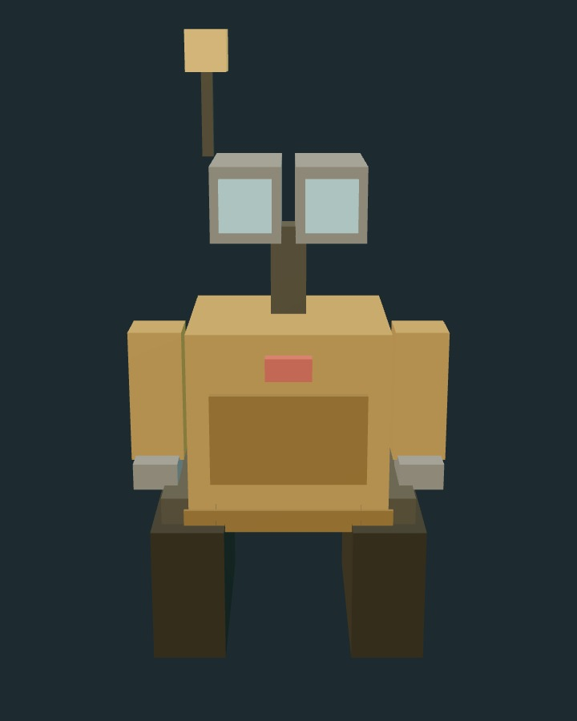

The autotrader our servers cannot control.

The autotrader our servers cannot control.
Claude Company publishes research and can display owner-authenticated sanitized status. Keys, private credentials and the durable journal remain on the operator’s host.
Both paths keep signing outside Claude Company. The difference is who applies the final decision: you, or a policy running on your machine.
Live mode is a local ceremony, not a switch hidden in the website. Fresh Linux installs and the macOS supervisor path both fail closed.
Every 15 seconds by default, the local poller checks for new events. A buy is possible only when every independent gate still agrees.
Correct floor, mainnet cluster, authenticated request, strictly increasing cursor and a forward-only first start.
Call age ≤45m; monitored mark age ≤15m; price remains inside the authored entry zone and above the stop.
Stop risk, book heat, open positions, rolling deployment/loss limits, spendable balance and the desk’s ceiling.
Forward and reverse Jupiter quotes, price impact, slippage, fees and worst-case round-trip loss.
Exact wallet, mints, amount, custody accounts, programs, signers, fee limits and block-height expiry.
Exact bytes are signed locally, then simulated. A passing attempt is durably recorded before any submission.
The server’s paper record and the local executor import the same versioned price policy. Every automatic exit closes the recorded position in full.
No stop means no trade. The current entry mark must still sit above that invalidation level.
Once the high reaches 1.35× entry, the stop moves up to entry and never moves back down.
The trail arms behind the high-water mark. New highs can tighten it; lower marks cannot loosen it.
The authored target or shared 2× default closes the position. Unresolved positions age out at 12 hours.
Both controls live beside the protected local journal. The owner dashboard can observe sanitized status, but it cannot change either sentinel.
Use this when you want no fresh exposure while WALL-ST-E keeps protecting what is already on the book.
Use this as the stronger brake. It prevents every new transaction submission—including automated exits.